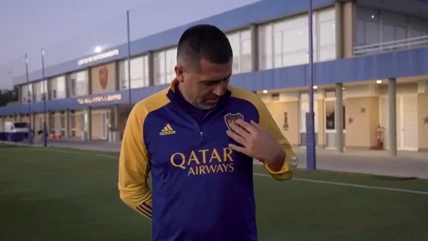

Tandil
Se esperaba con ansiedad y expectativa escuchar la palabra de Juan Román Riquelme. El anuncio de que el actual vice de Boca enviaría un mensaje este domingo a las 19 horas a través de la cuenta de instagram @BocaPredio despertó la incertidumbre en propios y extraños sobre qué diría Román después de 16 meses de silencio. ¿Alguna referencia a la renuncia de Mario Pergolini, vice 1° del club? ¿Alguna frase relacionada con el andar de Boca en esta Copa de la Liga? ¿Alguna mención a Jorge Amor Ameal, Miguel Angel Russo o Carlitos Tevez? No. Nada de eso ocurrió. El mensaje del ex enganche estuvo estrictamente relacionado con el trabajo que hace el club con las Divisiones Inferiores de la institución:
"Hola, soy Juan Román Riquelme. Para mí el predio es el lugar más lindo de todos. Donde vienen los nenitos más chiquitos, donde está el primer equipo. Donde uno tiene los sueños que quiere cumplir. Donde tenemos la suerte de contar con muchos entrenadores que fueron jugadores de fútbol. Que han sido campeones del mundo, que han sido campeones de América... Que terminan su entrenamiento a las 12 del mediodía todos los días. Están hasta las 4 o 5 de la tarde para ver qué pueden mejorar. Para mí es hermoso ver eso.
Ver a los nenitos, todos enanos, con el uniforme de nuestro club...
Amamos tener nuestra remera puesta. Para nosotros es maravilloso. Estamos orgullosos de ponernos la remera de Boca, de ver a los chiquitos con esa remera. De ver a los del primer equipo de la misma manera. Que los más chiquitos puedan ver entrenar a Tevez, que puedan ver a Cardona. A nosotros no nos pasó eso. No tuvimos nunca esa suerte y queremos que ellos lo puedan vivir cada día, que aprendan cada día, que sueñen que pueden ser igual que ellos. Nosotros solamente queremos ayudarlos para que puedan cumplir todos sus sueños".
Luego de ese mensaje, un rato más tarde, la cuenta @BocaPredio en Instagram subió unas historias con una aclaración de JR. Esto fue lo que dijo:
"Al hincha de Boca le queremos decir que nos tenga paciencia. Que esto que estamos haciendo es para que ellos se sientan más cerca de lo que hacemos día a día. Para poder contarle un poco lo que hacemos, para que lo disfruten... Sabemos que la van a pasar bien. Nosotros tenemos muchas ganas de seguir aprendiendo y mejorando y no tenemos dudas de que vamos a hacer un gran club, el más grande del país, y que nuestro predio va a estar cada día más lindo".
